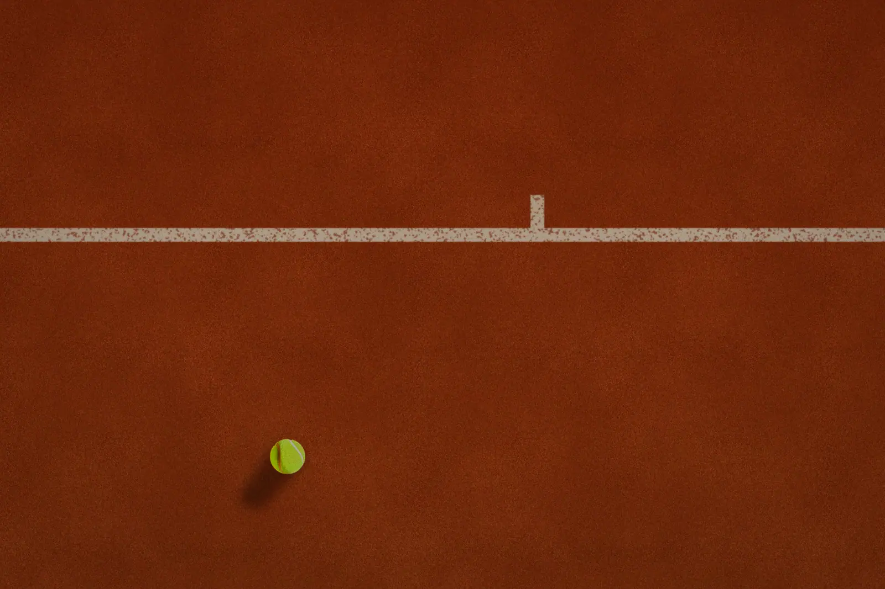

Показ: данные выдуманные

Чтобы отправить просьбу, включите JavaScript в браузере.
Снимок скроют, пока лига проверяет просьбу, — обычно в течение трёх дней. Порядок — в документе «Согласие на обработку данных».